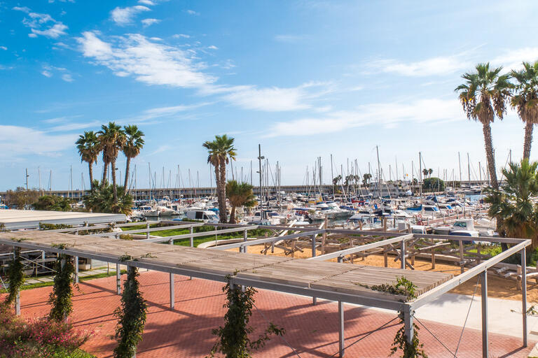

Visita · Mataró
El Port de Mataró és un punt de referència de la costa de Catalunya en la seva vessant esportiva, gràcies a la seva situació geogràfica privilegiada i a les seves instal·lacions d’alt nivell. Es…